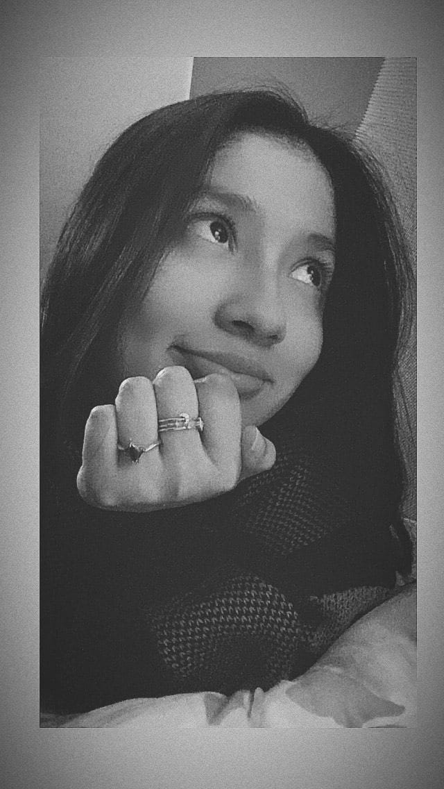

|  |
Sobre mi ✌ Estudio la carrera de Arquitectura de interiores, desde pequeña quise dedicarme a esto porque siempre me interesó el arte en general, amo pintar, de hecho una de mis artistas favoritas es Leonora Carrington y esta obra en particular me gusta mucho:El mundo mágico de los Mayas.
En mi tiempo libre disfruto de un buen libro , dibujar, ir al teatro o algún museo de arte. Me encanta contemplar la naturaleza, específicamente el mar y el anochecer ☽. |
 |
Misión 1 ⚡ En esta clase tuvimos la misión de imprimir algo que nos represente como grupo, por ello cada una dimos una idea para luego elegir al rayito, ya que para nosotras significaba la energía y poder de nuestro grupo. Me pareción una dinámica muy buena para romper el hielo e integrarnos de forma productiva, ya que llegamos a imprimir nuestro rayito⚡. |
 |
Misión 2 🤝 En esta misión teníamos que vender la ODS que habíamos elegido la cual es el número tres Salud y bienestar. y generar una solución viable para contribuir al desarrollo de ese objetivo. Nosotros utilizamos la vara de Esculapio que representa la salud y hallamos una gran problemática sobre el poco
acceso de las personas a su historial médico, por ello pensamos en una solución que involucre una alianza de la RENIEC y Salud púbica para insertar en una tarjeta a través de un chip la información requerida de la persona y agilizar este proceso de búsqueda de historial médico. Me pareció una buena dinámica ya que analizamos diferentes problemáticas y buscamos soluciones. |
 |
Misión 3 🛸En esta clase se nos dió la misión de crear un prototipo, para ello pensé en una problemática palpable en la vida cotidiana de un dibujante, por ello pensé en una mini aspiradora que pueda recoger la basura del borrador y virutas de madera. La idea es que tenga forma de platillo volador para "abducir" estos desechos y al hacerlo se prendan los foquitos led de su contorno. |